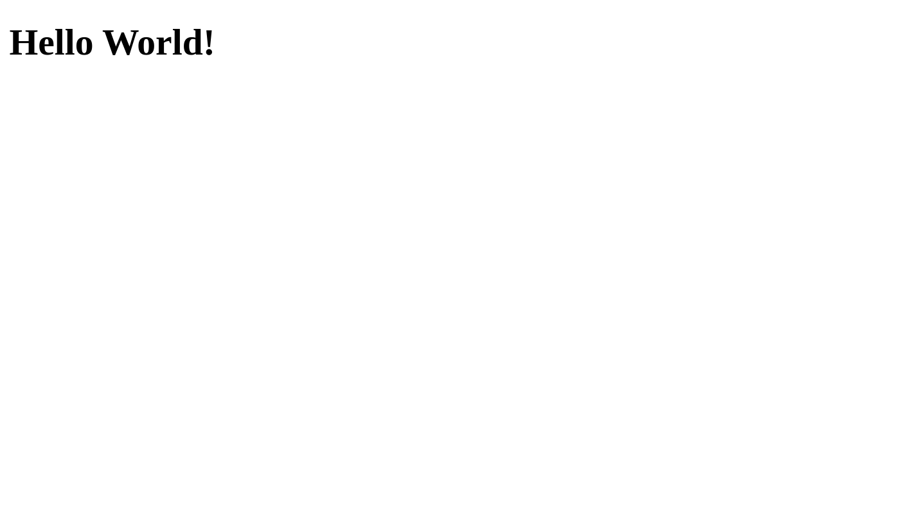

Step 1: Setup Webpage
Setup Github pages
The first thing we are going to do is to steup an actual webpage so that we have something to test later in our Lambdatest environment. To set up this simple website, we are going to use Github pages but you can ofcourse use other hosting platforms aswell, the important thing is that you can reach your website via an url in a browser.
To get started with Github pages, first, you need to create a repository that we will use to publish to your website. Go to your Github profile and create a new empty repository. Now you need to clone your repo and create an index.html file. Use the "copy or download" button on the repository dashboard to copy the address used for cloning and run the commands
$ git clone git@github.com:username/repo
$ cd repository-name
$ touch index.html
Use the git commands to add, commit and push your new file so that you can see it on Github. When this is done, go into the settings tab on the repository dashboard and scroll down to the headline Github Pages. In the dropdown menu titled "source", select master. This repo will now automatically publish your file named index.html (it has to be in the root directory of the repository and on the master branch) as a webpage to the URL https://username.github.io/<repository-name>. To see this in action, let’s add some content to index.html and push it.
Open the index.html file in your favorite text editor and copy this snippet of code into it:
<!DOCTYPE html>
<html lang="en">
<head>
<meta charset="UTF-8">
<meta name="viewport" content="width=device-width, initial-scale=1.0">
<title>Document</title>
</head>
<body>
<h1>Hello World!</h1>
</body>
</html>
Then use git to add, commit, and push your code to your master branch. If you now go to your URL and refresh the page, it should look like this (it might take a couple of minutes for pages to update your content):
Add some basic functionality
Now that we have our website published, we can go ahead and create something that we, later on, can test using Lambdatest. To keep this tutorial as simple and to the point as possible, we will not incorporate any CSS or Javascript code to our website, but you can of course test a website with CSS and Javascript in a similar fashion as we will demonstrate when we get to the testing part of the tutorial.
For this tutorial, we will demonstrate how you can test that a button works as it should. To test this, we need to add a button to our index page and have it do something, like redirecting to another page.
Firstly, let’s add a button that will redirect us to another file called secondpage.html. Insert the following code into the index.html file, just below the line with the h1 element.
<a href="secondpage.html">
<button>
Click me!
</button>
</a>
Of course, right now we don’t have that file so let’s create it, the same way we created our index-file, name it something like secondpage.html, and add some content to this file as well:
<!DOCTYPE html>
<html lang="en">
<head>
<meta charset="UTF-8">
<meta name="viewport" content="width=device-width, initial-scale=1.0">
<title>Second Page</title>
</head>
<body>
<h1>Hello Second World!</h1>
</body>
</html>
Now that all this is done, we just need to add the new file to Git and then commit and push the new changes! Our website should now be updated with the new button that redirects us to our second HTML page. Try it out on your own page!
But now that we have pressed our button, we can’t navigate back to our first page without changing our URL, so let’s just add another button that takes us back to our first page and push all these new changes with git:
<a href="index.html">
<button>
Go Back!
</button>
</a>
There we go! Now we have a website set up with some basic functionality that we can test! Nice work! In the next step, we will go through how to set up your Lambdatest account and walk through some of the functions that come with the Lambdatest application.